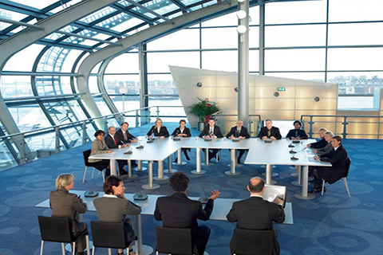

Skip to main content
Home
Products
Audience Response Voting
Basic Audience Response System
Audience Response Voting Solutions
Audience Response Case Studies: Swiss re-insurance
Audience Response / Silent Audction Reference Gallery
Smartphone Audience Response
Conference microphones
Wireless Conference Microphones
DCN NG Wired Conference Microphones
Software Control
Dome Camera Video-Microphone Integration
Conference Microphone Reference Gallery
Product Sales & Service
CCS900 Conference Microphones
DCN NG Interpretation and Microphone System
Intergrus - Digital Infra Red
Product Service and Support
Silent Auction
Silent Auction Details
Silent Auction Pledging
Silent Auction Sponsorship
Silent Auction Case Studies Special Olympics
Silent Auction Case Studies: Pistorio Foundation
Silent PA - Exhibition Audio
Simultaneous Interpretation Equipment
Interpreters
Interpretation Equipment Reference Gallery
Simultaneous Translation Equipment
Tour Guide / Whisper Systems
Our Work
Reference Gallery
Testimonials
About
Company Bio
Our Team
Partners
Terms & Conditions
Contact
[1] Heading
[2] Heading
[3] Heading

[4] Heading
[5] Heading
[6] Heading